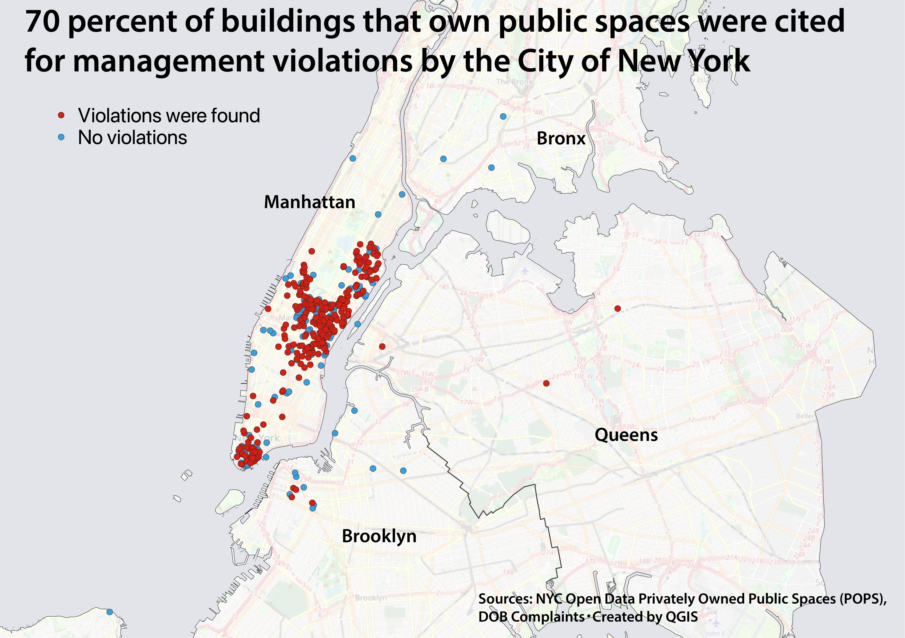
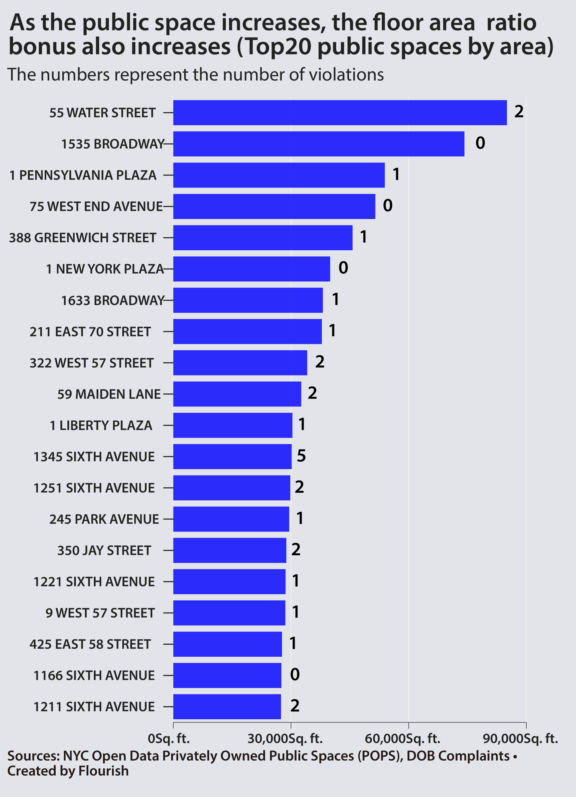

70% of New York Buildings Violate Public Space Regulations
Owners Turn a Blind Eye to Maintenance After Receiving Floor Area Ratio Bonuses
On the afternoon of July 3, the day before the 250th Independence Day, at 575 Fifth Avenue in Manhattan, New York. As the temperature rose to nearly 100 degrees Fahrenheit, a dozen or so people were cooling off in the building’s atrium. As reporter observed the scene for about two hours, members of the public came and went, sitting at tables to have lunch or read the newspaper.
This space is known as a Privately Owned Public Space (POPS). It was developed by the building’s owner and is freely accessible to anyone. However, it is not widely known that these POPS were created in exchange for permission to build larger buildings.

In 1961, the City of New York began requiring the creation of POPS as a condition for relaxing floor-area ratio restrictions, with the aim of increasing public space in densely populated areas such as downtown Manhattan. Although there are limits, developers can receive a floor-area bonus of up to 10 square feet for every 1 square foot of public space.
Today, 392 buildings in New York City own approximately 600 POPS—including plazas and arcades—with a total area of 3.8 million square feet (equivalent to nine Bryant Parks). Building owners are obligated to maintain and manage these POPS in permanently.

The current issues revolve around the commercial use of POPS and the lack of proper management. An analysis of New York City’s open data on POPS and complaints regarding POPS filed with the city’s Department of Buildings (DOB) revealed that 280 of the 392 buildings with POPS—71 percent—had been cited for violations by the city since 2000.
One such example is 1251 Avenue of the Americas in midtown Manhattan. On June 23 of this year, the city issued a violation notice alleging that a Japanese restaurant had expanded its business area by placing tables, chairs, and umbrellas on its outdoor POPS without permission. However, when a reporter visited the site on July 8, the tables and chairs were still in place, and the violation had not been rectified.

What is the actual state of these violations? I analyzed 460 cases from 2000 onward for which the details of the violations could be confirmed using New York City’s open data. I used generative AI (GPT-5.5) for the analysis and classified the violations into five categories: access restrictions, lack of amenities, commercial use, lack of maintenance, and inadequate signage. The reporter also verified the results.
As a result, there were 73 cases of commercial use, such as the restaurant mentioned above. There were also 97 cases of access restrictions, with violations contrary to the purpose of public spaces accounting for just under 40 percent of the total. Many violations were also noted, including the failure to install promised equipment—such as water dispensers and trash cans—and the lack of signs indicating that the area was a public space.
The City of New York is not sitting idly by. In 2017, it enacted an ordinance to strengthen oversight of POPS, and the city has been cracking down on violations since that time. There have been cases where a single building was reported to the city for violations seven times, and the reality is that these violations persist.
The underlying reason is the leniency of the penalties for violations. Fines are set at $4,000 or more for the first offense and $10,000 or more for subsequent offenses. According to DOB data, there have been cases where a $10,000 fine was imposed. However, these are the exception rather than the rule; in most cases, no fine was even imposed. Compared to the profits building owners gain from floor area ratio (FAR) bonuses, these fines are minuscule, and the current system serves as no deterrent.

POPS also exist in Japan. Under Tokyo’s system, creating public squares or parks results in floor area ratio (FAR) relief, similar to New York City. According to Tokyo Metropolitan Government data, 793 buildings have implemented POPS.

The reporter has visited several POPS sites in Tokyo. The plaza at Nihon University’s College of Science and Technology in Chiyoda Ward, central Tokyo, features simple support benches where people can sit. However, there are no tables, and the ground slopes, making it seem like an environment unsuitable for prolonged stays. In another location in Chiyoda Ward, a space created by widening an alley by one to two meters is also designated as a POPS.


An even bigger problem is the disclosure of information regarding POPS is insufficient. The names, addresses, and areas of the POPS at 793 buildings can be viewed on the Tokyo Metropolitan Government’s website. However, it is not possible to learn not only the details of complaints submitted by citizens or the status of violations, but also the types of POPS or even the equipment required to be installed; as things stand, it is impossible to evaluate the policy.
POPS are not just for building owners; they are a public asset. To ensure these spaces continue to enrich the cityscape, it is essential to establish a foundation for open discussion.